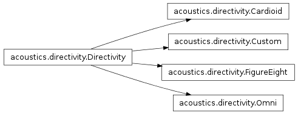
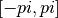
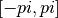
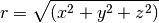
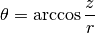
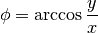

Directivity¶

Class and functions to work with directivity.
The following conventions are used within this module:
- The angle
 has a range
has a range ![[0, \pi]](_images/math/382cd28a1b99d9ce284e1888b78cd9554e6f335c.png) .
. - The angle
 has a range .
has a range .
- class acoustics.directivity.Cardioid(rotation=None)[source]¶
Bases: acoustics.directivity.Directivity
Cardioid directivity.
- class acoustics.directivity.Custom(theta=None, phi=None, r=None)[source]¶
Bases: acoustics.directivity.Directivity
A class to work with directivity.
- phi = None¶
Longitude. 1-D array.
- r = None¶
Magnitude or radius. 2-D array.
- theta = None¶
Latitude. 1-D array.
- class acoustics.directivity.Directivity(rotation=None)[source]¶
Bases: object
Abstract directivity class.
This class defines several methods to be implemented by subclasses.
- plot(filename=None, include_rotation=True)[source]¶
Directivity plot. Plot to filename when given.
Parameters: - filename – Filename
- include_rotation – Apply the rotation to the directivity. By default the rotation is applied in this figure.
- rotation = None¶
Rotation of the directivity pattern.
- class acoustics.directivity.FigureEight(rotation=None)[source]¶
Bases: acoustics.directivity.Directivity
Figure of eight directivity.
- class acoustics.directivity.Omni(rotation=None)[source]¶
Bases: acoustics.directivity.Directivity
Class to work with omni-directional directivity.
- acoustics.directivity.cardioid(theta, a=1.0, k=1.0)[source]¶
A cardioid pattern.
Parameters: - a – a
- k – k
- acoustics.directivity.cartesian_to_spherical(x, y, z)[source]¶
Convert cartesian coordinates to spherical coordinates.
Parameters: - x – x
- y – y
- z – z


